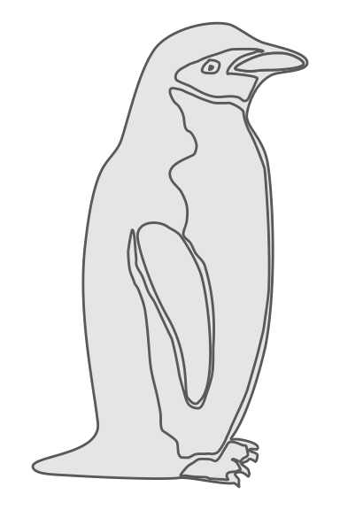
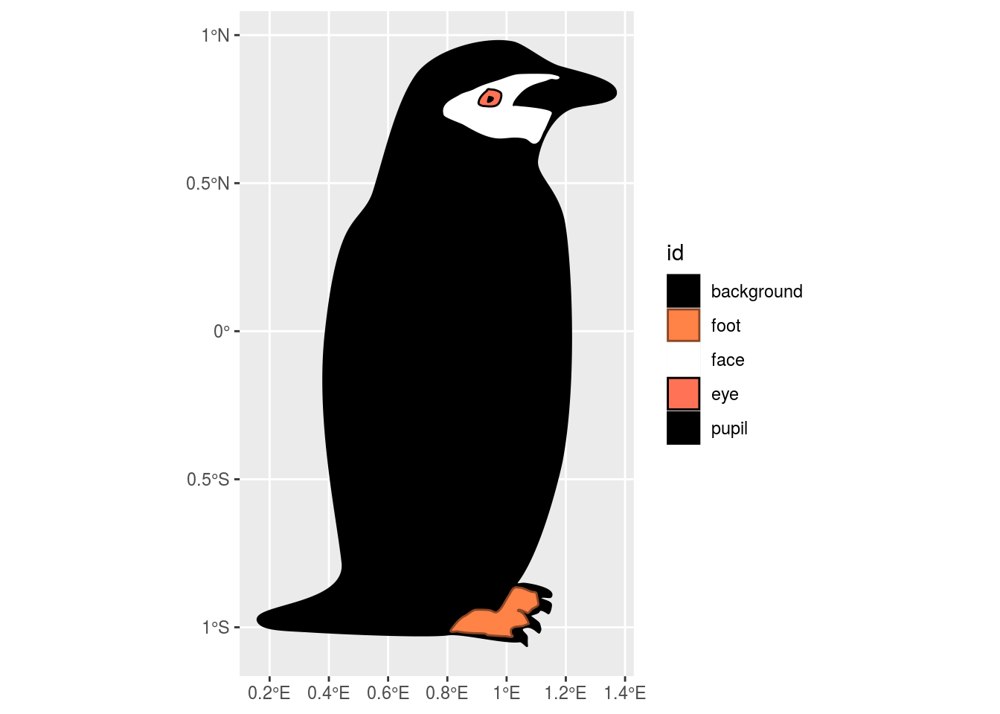
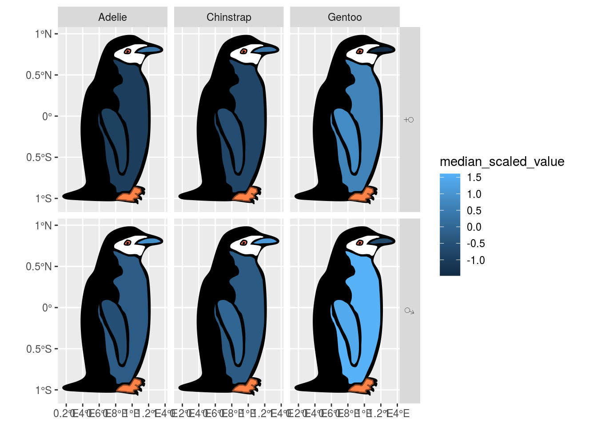
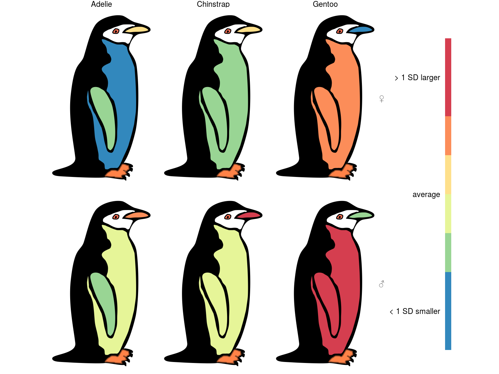
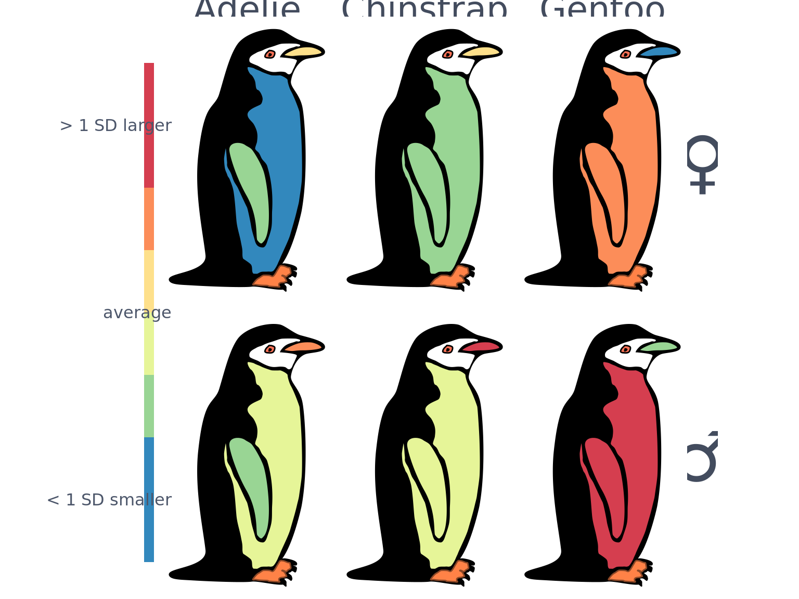
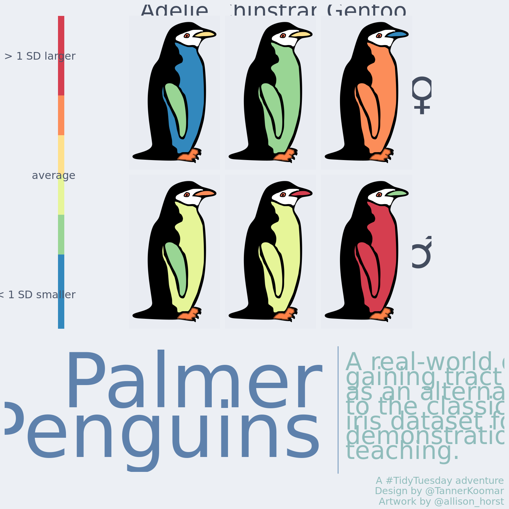

Palmer Penguins
Load Packages
library(tidyverse)
library(palmerpenguins)
library(ggnewscale)
library(sf)
library(patchwork)
library(showtext)Read in penguin diagram
This is a rough draft of a heatmap diagram specifically for the {palmerpenguins} dataset, and at the time of this writing is living on a development branch of the very nascent Simple Features For Science {sffs} warehouse / package.
sf_palmer <- read_sf("https://raw.githubusercontent.com/tkoomar/sffs/palmer/data-raw/sf_palmer/sf_palmer.geojson")
print(sf_palmer)## Simple feature collection with 9 features and 1 field
## geometry type: POLYGON
## dimension: XY
## bbox: xmin: 0.159483 ymin: -1.063218 xmax: 1.369025 ymax: 0.979735
## CRS: 4326
## # A tibble: 9 x 2
## id geometry
## <chr> <POLYGON [°]>
## 1 background ((1.037073 -0.844313, 1.037073 -0.844313, 1.037321 -0.843974, …
## 2 foot ((1.02272 -0.868436, 1.022712 -0.868446, 1.022607 -0.868572, 1…
## 3 flipper_lengt… ((0.804533 0.049629, 0.804448 0.049715, 0.804276 0.049887, 0.8…
## 4 bill_length_mm ((1.260757 0.847204, 1.26037 0.847223, 1.2596 0.847262, 1.2588…
## 5 bill_depth_mm ((1.260757 0.847204, 1.26037 0.847223, 1.2596 0.847262, 1.2588…
## 6 face ((1.174673 0.856284, 1.174691 0.856296, 1.174724 0.856322, 1.1…
## 7 body_mass_g ((0.597523 0.068709, 0.597514 0.068705, 0.597494 0.068696, 0.5…
## 8 eye ((0.93493 0.813604, 0.934965 0.813629, 0.935024 0.813671, 0.93…
## 9 pupil ((0.940806 0.7871717, 0.940859 0.787341, 0.940897 0.787461, 0.…What does it look like? Let’s take a peak:
ggplot(sf_palmer) +
geom_sf() +
theme_void()
They might not be the most dapper, but I find something about this penguin’s oddly lumpy form to be rather endearing.
Summarize data
As alluded above, this week’s data comes from {palmerpenguins}, which is an alternative to the classic iris toy dataset, featureing everyones favorite antarctic flightless bird!
head(penguins)## # A tibble: 6 x 8
## species island bill_length_mm bill_depth_mm flipper_length_… body_mass_g sex
## <fct> <fct> <dbl> <dbl> <int> <int> <fct>
## 1 Adelie Torge… 39.1 18.7 181 3750 male
## 2 Adelie Torge… 39.5 17.4 186 3800 fema…
## 3 Adelie Torge… 40.3 18 195 3250 fema…
## 4 Adelie Torge… NA NA NA NA <NA>
## 5 Adelie Torge… 36.7 19.3 193 3450 fema…
## 6 Adelie Torge… 39.3 20.6 190 3650 male
## # … with 1 more variable: year <int>For this plot, we want one diagram/heatmap per species and sex. So, get the median value of each variable at that level. Note that because the scales of the different measurements are rather all over the place, we will first scale each so that values are expressed as standard deviations.
penguins_scaled <- penguins %>%
drop_na() %>%
mutate(across(where(is.numeric), ~scale(.x)[,1]))
penguins_scaled_summary <- penguins_scaled %>%
group_by(species, sex) %>%
summarize(across(where(is.numeric), median),
.groups = 'keep')
penguins_scaled_summary_long <- penguins_scaled_summary %>%
pivot_longer(cols = 3:7,
names_to = 'id',
values_to = 'median_scaled_value') %>%
mutate(sex = if_else(sex == 'female', '♀', '♂'))
head(penguins_scaled_summary_long)## # A tibble: 6 x 4
## # Groups: species, sex [2]
## species sex id median_scaled_value
## <fct> <chr> <chr> <dbl>
## 1 Adelie ♀ bill_length_mm -1.28
## 2 Adelie ♀ bill_depth_mm 0.221
## 3 Adelie ♀ flipper_length_mm -0.925
## 4 Adelie ♀ body_mass_g -1.00
## 5 Adelie ♀ year -0.0517
## 6 Adelie ♂ bill_length_mm -0.620background_fill_colors <- c( background = 'black', foot = 'sienna1',
face = 'white',eye = 'coral1', pupil = 'black')
background_color_colors <- c(background = 'black', foot = 'sienna4',
face = 'white', eye = 'black', pupil = 'black')
sf_background <- sf_palmer %>%
anti_join(penguins_scaled_summary_long) %>%
## This first-draft of the diagram uses the same geometry for the bill length
## and bill width, so we will just visualize the depth here
filter(id != 'bill_length_mm') %>%
mutate(id = as_factor(id))## Joining, by = "id"ggplot() +
geom_sf(data = sf_background,
aes(fill = id,
color = id)
) +
scale_fill_manual(values = background_fill_colors) +
scale_color_manual(values = background_color_colors)
That looks a bit more like a proper penguin!
As you might be able to guess from the axis ticks on this plot, this diagram is actually a geographic map (of sorts). {sffs} takes advantage of the fact that ggplot will plot any arbitrary shape, so long as it can be expressed like a map (in this case, a simple features {sf} object).
Simple plot
penguin_plot <- sf_palmer %>%
inner_join(penguins_scaled_summary_long,
by = 'id') %>%
ggplot() +
geom_sf(data = sf_background,
aes(fill = id,
color = id)
) +
scale_fill_manual(values = background_fill_colors,
guide = guide_none()) +
scale_color_manual(values = background_color_colors,
guide = guide_none()) +
new_scale_fill() +
new_scale_color() +
geom_sf(aes(fill = median_scaled_value), color = 'black') +
facet_grid(sex ~ species)
penguin_plot
That isn’t particularly pretty. These penguins deserve to be seen in style, so let’s do some tweaking.
Customize Plot
Better color scale
The human eye really isn’t good with continuous color scales. Let’s do a binned scale via scale_fill_fermenter, and make it a divergent once since we know we scaled our data. We will fit the limits to be symetric around 0.
penguin_plot <- penguin_plot +
scale_fill_fermenter(palette = 'Spectral',
limits = c(-1.5, 1.5),
n.breaks = 8,
labels = c('< 1 SD smaller', '', '', 'average', '', '', '> 1 SD larger'),
guide = guide_colorsteps(
title = element_blank(),
label.position = 'left',
barheight = 25,
barwidth = 1/2
)
) +
theme_void()
penguin_plot
Looking pretty good, I think we just need to tweak the font face and size.
Font face and size
font_add_google("M PLUS Rounded 1c", "M+300", regular.wt = 300)
font_add_google("Krona One", "K1")
font_add_google("M PLUS Rounded 1c", "M+100", regular.wt = 100)
showtext_auto()
penguin_plot <- penguin_plot +
theme(
legend.position = 'left',
text = element_text(family = 'M+300', color = '#434C5E' ),
legend.text = element_text(size = 12, color = '#4C566A'),
strip.text.x = element_text( size = 25),
strip.text.y = element_text( size = 50, angle = 0)
)
penguin_plot
Other Plot Colors
penguin_plot <- penguin_plot +
theme(plot.background = element_rect(fill= alpha("#ECEFF4", 0.5),
color = NA),
panel.background = element_rect(fill = alpha("#E5E9F0", 0.5),
color = NA)
) title_plot <- ggplot() +
annotate(geom = 'text',
label = 'Palmer\nPenguins',
y = 2, x = 2,
size = 30,
color = "#5E81AC",
family = "K1",
hjust = 1,
vjust = 1,
lineheight = 0.55) +
coord_cartesian(xlim = c(0,2), ylim = c(0,2)) +
theme_void() +
theme(plot.caption = element_blank())
text_plot <- ggplot() +
annotate(geom = 'text',
label = 'A real-world dataset gaining traction as an alternative to the classic iris dataset for demonstration and teaching.' %>% str_wrap(20),
y = 2, x = 0,
size = 9.8,
color = "#8FBCBB",
family = "M+300",
hjust = 0,
vjust = 1,
lineheight = 0.5) +
coord_cartesian(xlim = c(0,2), ylim = c(0,2)) +
geom_vline(xintercept = -0.1, color = '#81A1C1', size = 1) +
labs(caption = "A #TidyTuesday adventure\nDesign by @TannerKoomar\nArtwork by @allison_horst") +
theme_void() +
theme(plot.margin = margin(t = 20),
plot.caption = element_text(color = "#8FBCBB",
family = "M+300",
size = 11))
layout <- "
#111#
22233
###33
"
penguin_plot + title_plot + text_plot +
plot_layout(design = layout,
widths = c(1, 10, 10, 10, 1),
heights = c(30, 12, 1/5)
) &
theme(plot.background = element_rect(fill= "#ECEFF4",
color = NA)
) 
ggsave('featured.png', dpi = 144)Tanner Koomar
PhD Candidate
My research interests include computational genetics, machine learning and science communication